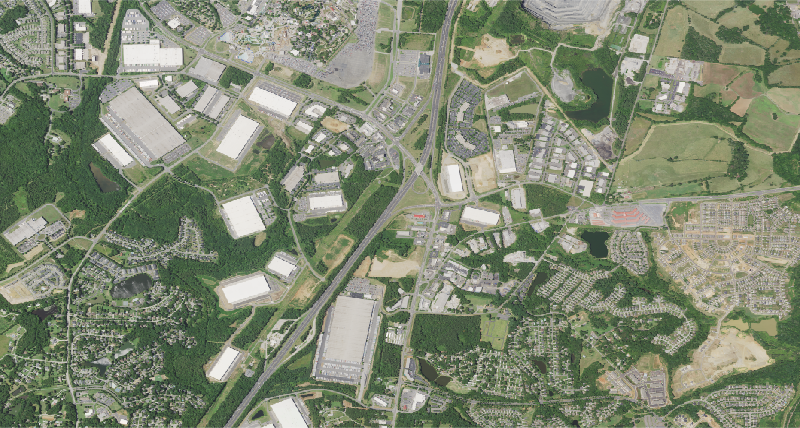
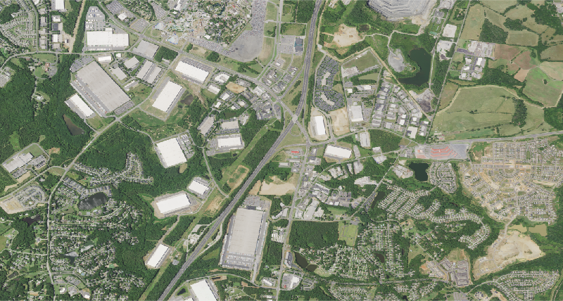

The two year composites show that there is development of housing and industry in the Pineville area of Charlotte. This three year composites show a more refined timescale of development. Simply from the two year composite, I assumed that developement of homes occur after industries flow in because new homes are needed for new workers. At least in this snapshot it seems as though houses came first before industries. This doesn't necessary mean new homes bring industry because this is a small portion of Charlotte. Industry might have developed in other areas of Charlotte not captured in the photo and the flux of neighborhood development captured is the result. In terms of visualization, I actually found a simple display of all 3 pictures was better at seeing changes than the button. For me, the button was just an extra task I had to do. However, if I'm working with more than 3 pictures, then button will definitely be better since there might be a lot more dates to work with. However, that means a lot more clicking. I wonder if a scroller of timeline would work better.
.jpg)
 
